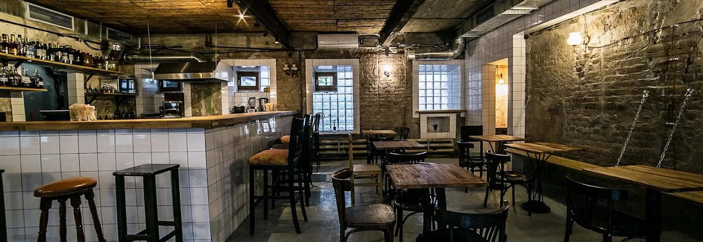
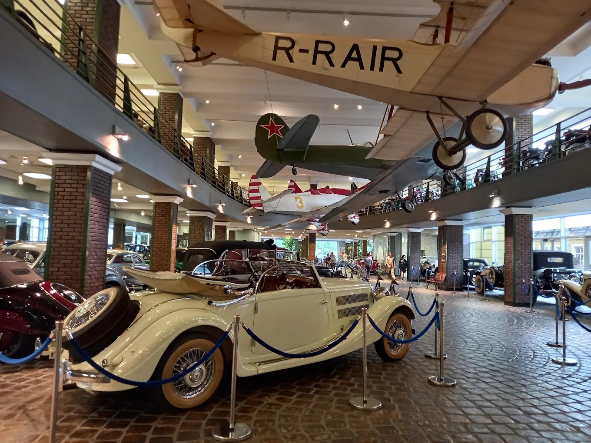
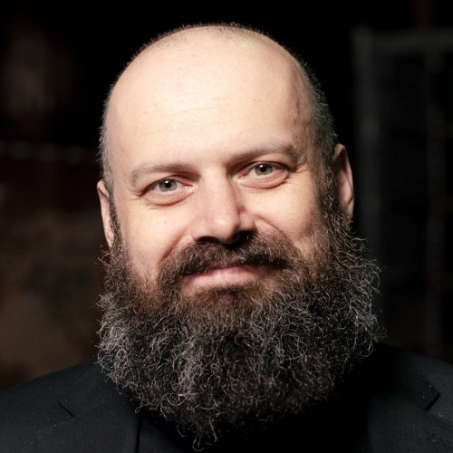
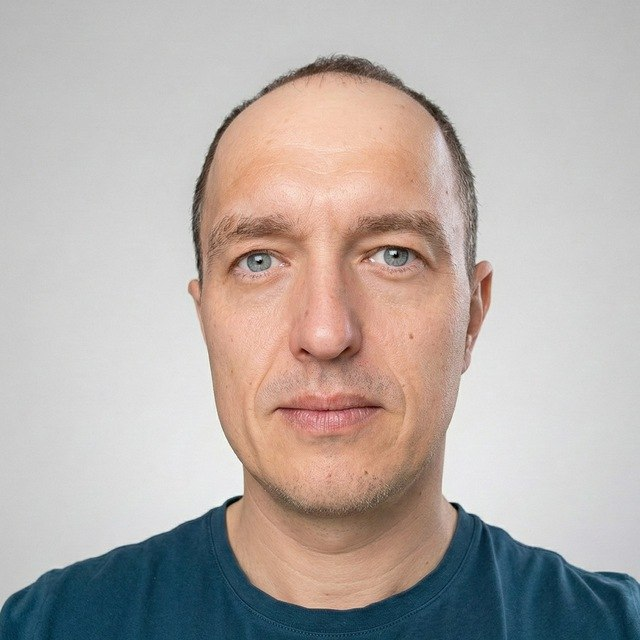
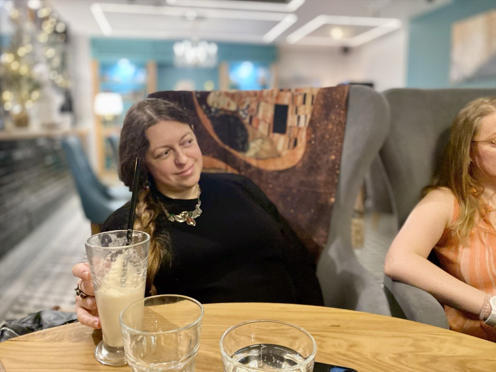
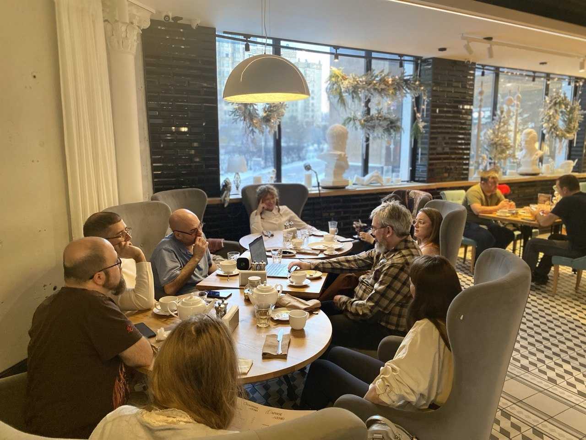
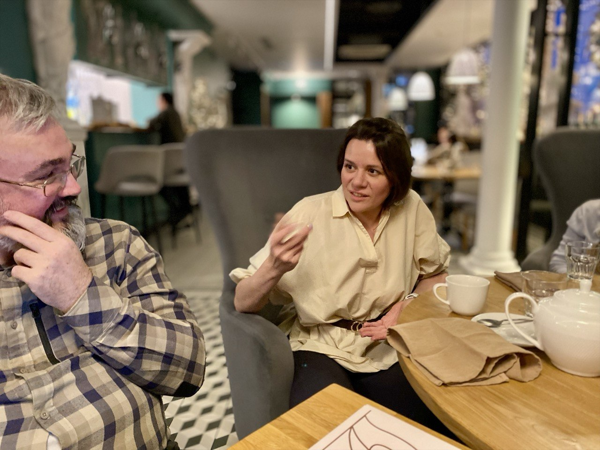
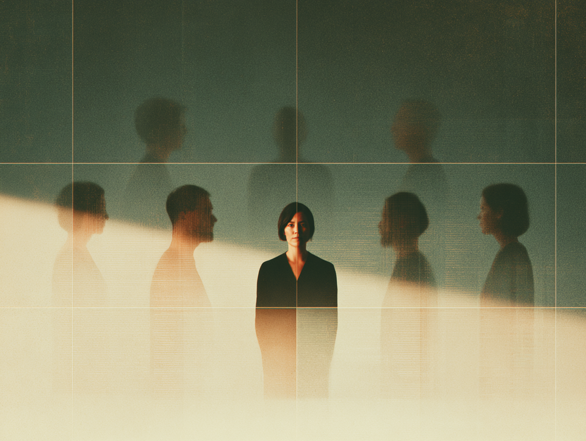

Интеллектуальный
лекторий
об ИИ
Первый в Москве регулярный публичный лекторий об искусственном интеллекте. Приходите послушать и обсудить, как ИИ меняет повседневную жизнь, работу и город, — вместе с людьми, которые в этом разбираются.
Разговор об ИИ,
на который стоит прийти
Что это
Площадка для открытого разговора об искусственном интеллекте. На встречах выступают ведущие специалисты по ИИ: исследователи, инженеры и практики из технологических компаний, университетов и индустрии — и говорят простым языком, без профессионального жаргона.
В Москве регулярно проходят технологические конференции и разовые образовательные мероприятия, но постоянного места, где можно спокойно и системно разбираться в теме ИИ вместе с экспертами, до сих пор не было.
Зачем приходить
Чтобы уйти с понятным ответом на вопрос «а что это значит для меня». Мы соединяем науку и бизнес, технологии и гуманитарное мышление, экспертов и любопытную аудиторию — и делаем искусственный интеллект понятным, обсуждаемым и осмысленным для всех, кто пришёл.
Поговорим о технологиях,
которые меняют мир.
Если вам близки глубокие разговоры об актуальном
По интонации и интеллектуальному подходу лекторий близок к таким проектам, как «ПостНаука», Arzamas, TED, «Армен и Фёдор» и другим современным просветительским платформам, работающим на стыке науки, культуры и общества.
А если вспомнить более давнюю историю — атмосферой лекторий похож на московские интеллектуальные клубы конца 1990-х — начала 2000-х, в частности «Проект О.Г.И.»: живое место встреч исследователей, авторов, предпринимателей и просто любопытных горожан, где регулярно проходили публичные разговоры, литературные чтения, лекции и дискуссии.
Кстати, это не просто похожая атмосфера: офлайн-встречи лектория проходят на площадках Дмитрия Ицковича — того самого, кто создал «Проект О.Г.И.». Это другой проект и другая тема, но в этом есть настоящая связь времён — мы продолжаем то самое ощущение города и разговора, которое он создавал двадцать лет назад.
Кто приходит на лекторий
Не курс и не конференция — регулярные встречи, где можно спокойно расспросить экспертов и обсудить это с другими.
Как устроена встреча
Выступление
Одно выступление, около часа.
Дискуссия
Дискуссия и вопросы из зала.
Общение
Живое общение и нетворкинг.
Офлайн


Встречи проходят в рюмочных «Зинзивер» (Покровский бульвар) и «Дежурная рюмочная» (Новый Арбат), а также в Музее техники Вадима Задорожного в Архангельском.
Рюмочные принадлежат Дмитрию Ицковичу — издателю, продюсеру, основателю «Полит.ру» и издательства ОГИ, автору культовых проектов «Проект О.Г.И.» и «Билингва». У площадок 30 тыс. подписчиков в соцсетях.
Музей техники основан Вадимом Задорожным — это один из крупнейших частных музеев исторической техники в России: более 1000 экспонатов, от ретроавтомобилей и паровозов до авиации и танков.
Онлайн
Практические мастер-классы проходят в «Яндекс Телемосте» — без установки приложений и предварительной регистрации.
Формат подходит для практических воркшопов, где участники проходят путь от идеи до рабочего результата вместе со спикером.
Встречи фиксируются, а материалы публикуются в открытом архиве лектория.
Ближайшие встречи


Что уже было
«Бессмертие цифровых двойников»
«Человеческая память по природе несовершенна: мы забываем, искажаем, переписываем прошлое, часто бессознательно, чтобы сохранить психический комфорт. Цифровой аватар, напротив, потенциально способен помнить всё». — из выступления Константина Воронцова



«Claude Code для непрограммистов»
Практический мастер-класс: участники прошли путь от идеи до рабочего прототипа и разобрались, как собрать простой инструмент под свою задачу без навыков программирования. Формат — воркшоп с символическим взносом за участие.
По итогам встречи участники получили готовую PDF-инструкцию «Как работать с Claude Code» — установка без бана аккаунта, разбор плагина feature-dev и чек-лист перед каждым запуском.
Как участвовать
Вживую
Офлайн-встречи в Москве — на площадках лектория, включая Музей техники Вадима Задорожного. Час-разговор, вопросы из зала, нетворкинг.
Прийти на встречуОнлайн-подписка
Не получается приехать? Оформите подписку и смотрите архив выступлений — тексты и видео — когда удобно.
СкороБилеты
Дата и тема ближайшей встречи уточняются — напишите, и мы пришлём анонс, как только он будет готов.
Станьте партнёром лектория об ИИ
Расскажите, как вам было бы интересно участвовать — университету, компании, медиа или культурной площадке. Организация полностью на моей стороне: вам не придётся тратить на это много времени или ресурсов.
Как вы можете участвовать
- Делегировать своих спикеров и экспертов для участия во встречах и дискуссиях
- Вместе с нами формировать темы выступлений и публичных разговоров
- При возможности предоставить площадку для проведения отдельных встреч или спецвыпусков
- Рассказать о проекте в своих каналах и медиа
- Участвовать в совместных публикациях, образовательных и просветительских инициативах
Формат участия гибкий: вы можете подключиться на постоянной основе или к отдельным событиям и темам.
Что это даёт вам
- Участвовать в формировании публичной повестки об искусственном интеллекте
- Укреплять позицию интеллектуального лидера отрасли
- Вести спокойный экспертный разговор без рекламного давления
- Получать доступ к думающей городской и профессиональной аудитории
- Присутствовать в новой культурной и образовательной городской площадке
- Расширять медиаприсутствие через научно-популярные коллаборации, лекции и публикации
Варианты участия
Площадка
Предоставить собственную площадку для лектория или спонсировать аренду площадки, которую подберу я.
Продвижение
Профинансировать маркетинг и рекламу лектория, а также покрыть другие операционные расходы проекта.
Экспертиза
Предоставить спикеров для выступлений и площадки для анонсов событий в своих каналах и медиа.
Что беру на себя я
- Разрабатываю концепцию и формат встреч
- Формирую темы выступлений в сотрудничестве со спикерами
- Готовлю анонсы и информационные тексты
- Обеспечиваю маркетинг и продвижение мероприятий
- Организую продажу билетов и взаимодействие с аудиторией
- Занимаюсь поиском и координацией площадок
- Модерирую встречи и веду программу
- Организую фото- и видеодокументацию мероприятий
- Веду социальные сети и обеспечиваю освещение после событий
- Создаю архив лекций и материалов
- Работаю со СМИ и медийными партнёрами
- Ищу новых партнёров и возможности для коллабораций
Вы участвуете в проекте как интеллектуальный партнёр и эксперт, получая репутационный и коммуникационный эффект — не вовлекаясь в операционное управление и организационные процессы.

Расскажите о том, что вас сейчас занимает в теме ИИ
Организация полностью на стороне лектория: анонс, площадка, запись, модерация — вам нужно только подготовить выступление.
Формат
Офлайн-лекция (около часа) с дискуссией и живым общением — или практический онлайн-мастер-класс, где от идеи доходят до рабочего прототипа. Встречи фиксируются, а материалы публикуются в открытом архиве лектория.
Что это даёт вам
- PR и охват: анонсы и отчёты выходят на площадках с 30 тыс. подписчиков, видеозапись расширяет охват далеко за пределы вечера
- Позиционирование как эксперта и лидера мнения в теме ИИ — без рекламного тона, в формате содержательного разговора
- Доступ к думающей городской аудитории и профессиональному сообществу вокруг ИИ
- Нетворкинг с другими спикерами, исследователями и предпринимателями, которые применяют ИИ на практике
Открыта к знакомству — с университетами, компаниями, медиа и культурными площадками
Напишите, что вас интересует, — обсудим формат участия, партнёрские роли или совместное мероприятие. А если просто хотите прийти на встречу, тоже пишите, буду рада.